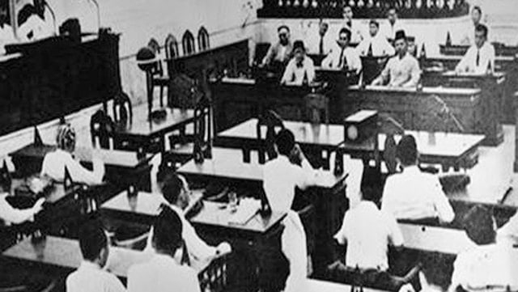

1.2.1 Pernyataan Proklamasi Kemerdekaan Indonesia

Persiapan proklamasi kemerdekaan diselesaikan pada 17 Agustus 1945 kira kira pukul 04.30 WIB. Kabar pembacaan Proklamasi Kemerdekaan Indonesia tersebar dengan cepat. Pada pagi hari, banyak pemuda membanjiri Lapangan Ikada. Hal tersebut dikarenakan informasi salah yang telah disebarkan dari mulut ke mulut.
Pagi hari rumah Ir. Soekarno, halaman rumahnya terlihat padat dengan pemuda yang menunggui pembacaan proklamasi kemerdekaan. Untuk menjaga keamanan selama upacara proklamasi, dr. Muwardi meminta Syodanco Latief Hendraningrat untuk berjaga-jaga di sekitar rumah tersebut. Beberapa prajurit Peta juga berjaga di jalan kereta api di belakang rumah Ir. Soekarno beserta di Asrama Jaga Monyet. Syodanco Arifin Abdurrahman selalu siap berjaga di pesawat telepon rumah Soekarno.
Sedangkan untuk peralatannya, mikrofon dan pengeras suara dipinjamkan oleh Gunawan, pemilik Toko Radio Satria di Salemba Tengah 24. Tiang bendera disiapkan oleh Suhud yang dibuat dari bambu, meskipun ia lupa kalau memiliki tiang bendera dari besi.
Pada 10.00 WIB, tokoh pejuang yang hadir di Pegangsaan Timur diantara lain,
- dr. Buntaran Marmoatmojo
- Mr. A.A. Maramis
- Mr. Latuharhary
- Abikusno Cokrosuyoso
- Anwar Cokroaminoto
- Harsono Cokroaminoto
- Otto Askandardinata
- Ki Hajar Dewantara
- Sam Ratulangie
- K.H. Mas Mansur
- Mr. Sartono
- Sayuti Melik
- Pandu Kartawiguna
- M. Tabrani
- dan A.G. Pringgodigdo
*pergi ke bagian setelah 1.2 untuk mendengar pidato proklamasi kemerdekaan Indonesia oleh Soekarno*
Acara tersebut dilanjutkan dengan pengibaran sang saka Merah Putih. Pengibaran bendera disertai lagu Indonesia Raya oleh Wage Rudolf Supratman
- Cita-cita Indonesia mencapai kemerdekaan telah tercapai
- Indonesia telah berdaulat di atas tanah air dan negaranya sendiri
- Bangsa dan negara RI mulai dikenal dunia internasional
1.2.2 Penyebaran Berita Proklamasi Kemerdekaan Indonesia

Para pemuda ditugaskan untuk menyebarluaskan berita proklamasi. Cara menyebarkannya berupa mulut ke mulut, surat, dll. Ada yang berjalan kaki, naik sepeda, mobil, demi menyebarkan stensilan naskah proklamasi ke berbagai tempat.
Supardo dari Balai Pustaka mencetak puluhan ribu stensilan. Hal tersebut dilanjutkan oleh B.M. Diah dari Asia Raya yang mencetak ratusan ribu dari naskah proklamasi tersebut.
Berita sukacita tersebut juga tersebar melewati pulau Jawa dari Sabang sampai Merauke.
Syahrudin, wartawan kantor berita Domei memperoleh salinan naskah proklamasi yang kemudian disampaikan ke Waidan B.Penelewen, kepala bagian radio. Berita tersebut secepatnya disiarkan selama tiga kali berturut-turut. Akan tetapi terhenti setelah dua kali oleh tentara Jepang. Meskipun pihak Jepang mencoba meralat sebagai kekeliruan, para pemuda tetap mendirikan pemancar radio sendiri dimana berita proklamasi terus disiarkan.
Jusuf Ronodipuro dari Radio Hosokioku mengudarakan teks proklamasi agar terdengar seluruh dunia. Berhubung seluruh dunia, Molly Bondan dan Moh. Bondan menyebarluaskan berita proklamasi dalam bahasa Inggris.

Yang paling pertama mengakui kemerdekaan bangsa Indonesia adalah Mesir. Mesir bahkan menganjurkan negara anggota Liga Arab mengakui kedaulatan RI.
Kemerdekaan Indonesia membawa banyak sukacita bagi rakyat Indonesia. Rakyat meneriakkan pekik MERDEKA secara lisan dan tulisan sebagai ungkapan kegembiraan dan kesiapan menanggung resiko menghadapi kekuatan Jepang dan Sekutu.
Seiring waktu, berita kemerdekaan diterima di seluruh pelosok Nusantara.
1.2.3 Terbentuknya Negara dan Pemerintahan Republik Indonesia

Pada saat proklamasi kemerdekaan Indonesia, pemerintahan masih belum terbentuk. Secara de facto sebuah negara dipanggil negara bila ada wilayah, rakyat, dan pemerintahan.
18 Agustus 1945, PPKI mengadakan sidang pertama yang menghasilkan keputusan berikut:
- Menetapkan Undang Dasar Republik Indonesia.
- Menetapkan Ir. Soekarno dan Drs.Mohammad Hatta sebagai presiden dan wakil presiden.
- Sebelum dibentuknya MPR, pekerjaan presiden dibantu Komite Nasional.
- Menetapkan 12 Kementrian
- Dalam Negeri
- Luar Negeri
- Kehakiman
- Keuangan
- Kemakmuran
- Kesehatan
- Pengajaran
- Sosial
- Pertahanan
- Penerangan
- Perhubungan
- Pekerjaan Umum
- Membagi daerah RI menjadi 8 provinsi
- Sumatra
- Jawa Barat
- Jawa Tengah
- Jawa Timur
- Sunda Kecil
- Maluku
- Sulawesi
- Kalimantan
- Komite Nasional Indonesia Pusat dan Daerah
- Partai Nasional Indonesia
- Badan Keamanan Rakyat